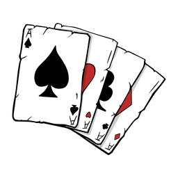

El solitari és un joc de cartes per a un sol jugador. Precisament, el nom fa referència al fet que només hi ha un jugador en competència. És considerat com un joc de paciència i destresa, l'objectiu del qual és utilitzar totes les cartes de la baralla, per construir les quatre piles de cartes classificades per pintes començant pels asos en ordre ascendent. No hi ha cap història concreta atribuïda a aquest joc, però és probable que aparegués amb el naixement dels cartes i com a entreteniment personal.
